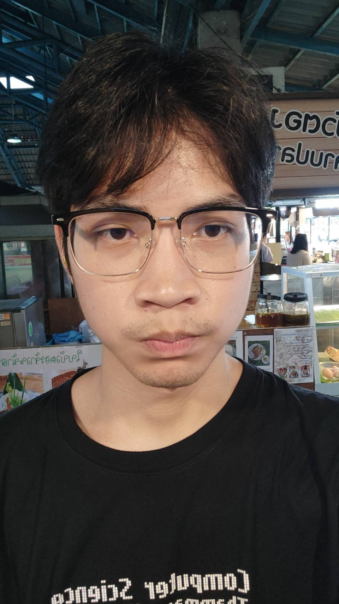

การบอกเล่าเรื่องราวเกี่ยวกับอนาคตที่มุ่งหวังที่จะทำหรือเป็น ไม่ว่าจะเป็นอาชีพหรือเป้าหมายที่ตั้งไว้หลังจากเข้าศึกษาที่รั้ว CSTU รวมถึงการนำความรู้ที่ได้รับไปใช้ประโยชน์ เพื่อจะทำให้อนาคตที่มุ่งหวังประสบความสำเร็จ
ᯓ★ Information
สมาชิก

ณัชชา กาญจนาภา

ธนกฤต เพ็ชรสวัสดิ์

กฤศ ชนะประเสริฐ

ชญานินท์ เจียมเจริญ

ชนิภรณ์ คิมประเสริฐ

ธนยศ พรมกุดตุ้ม
Our Future
ณัชชา กาญจนาภา
1. จบปริญญาตรีจากสาขาวิทยาการคอมพิวเตอร์ คณะวิทยาศาสตร์และเทคโนโลยี มหาวิทยาลัยธรรมศาสตร์ |
|
|---|---|
ธนกฤต เพ็ชรสวัสดิ์เมื่อเราเรียนจบ เราจะมีโอกาสมากมายในสายงานที่เกี่ยวข้องกับเทคโนโลยี ไม่ว่าจะเป็นการพัฒนาแอปพลิเคชัน การสร้างเว็บไซต์ หรือแม้แต่การทำงานด้านปัญญาประดิษฐ์และการวิเคราะห์ข้อมูล ทุกอย่างนี้คือสิ่งที่สามารถเปลี่ยนแปลงโลกได้เลย เราอาจจะได้ทำงานในบริษัทใหญ่ ๆ หรือแม้แต่สร้างธุรกิจของตัวเองก็ได้ การได้ใช้ความรู้ที่เรียนมาเพื่อแก้ปัญหาจริงในชีวิตประจำวันถือเป็นความท้าทายที่ต้องผ่านไปให้ได้ |

|
กฤศ ชนะประเสริฐฉันมีความฝันที่เปลี่ยนแปลงอยู่ตลอดเวลาเพราะบางครั้งการบรรลุหรือไม่บรรลุบางสิ่งบางอย่างสามารถ
เปลี่ยนแปลงความรู้สึกและความคิดของฉันได้ |

|
ชญานินท์ เจียมเจริญในอนาคต ผมอยากจะเป็น deverlop game ถ้าไม่ได้ก็หาอาชีพที่ใช้ความรู้ เกี่ยวกับโปรแกรม และ coding และก็จะทำอาชีพเสริมเช่น นักวาดการ์ตูน youtuber |
|
ชนิภรณ์ คิมประเสริฐในอนาคตคาดหวังว่าจะได้เข้าทำงานในบริษัทที่พัฒนาซอฟแวร์ อยากทำตั้งแหน่งออกแบบเว็บไซต์ นอกจากนี้ วางแผนที่จะสร้างเกมเป็นของตัวเองเพื่อเพิ่มรายได้ และเมื่อสามารถสะสมทุนจากการทำงานได้ประมาณหนึ่ง อยากที่จะเริ่มธุรกิจเปิดร้านขายหนังสือเป็นธุรกิจส่วนตัว ทำควบคู่กับงานประจำที่เกี่ยวกับสายเทคโนโลยี เพื่อนำความรู้ที่ได้ศึกษามาตลอด 4 ปีนำมาใช้ให้เกิดประโยชน์ |
|
ธนยศ พรมุกตุ้มในอนาคตคาดที่ผมคิดเอาไว้ผมอยากจะทำงานเกี่ยวกับ GameDev โดยเฉพาะ เนื่องจากเป็นความชอบส่วนตัวครับ อยากจะทำในส่วนของ AI ในระบบเกม |

|